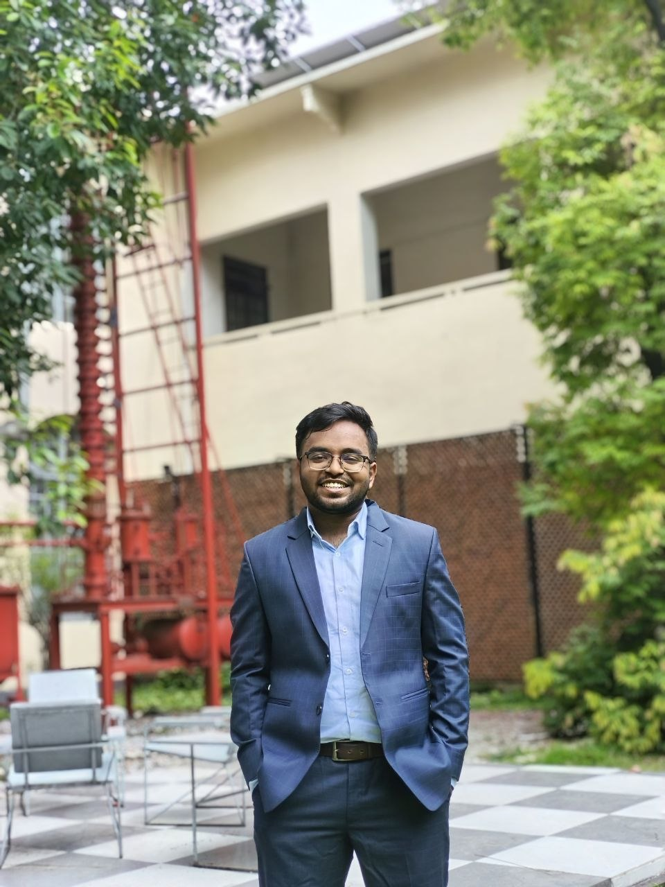

Ahasan Habib Rafy
Chemical Engineering Graduate
Bangladesh University of Engineering and Technology (BUET)
I am interested in integrating Artificial Intelligence with Chemical Engineering to develop intelligent and sustainable solutions for catalyst design, renewable energy, carbon capture, process optimization, and environmental technologies.

About Me
I graduated with a B.Sc. in Chemical Engineering from the Bangladesh University of Engineering and Technology (BUET). My research interests lie at the intersection of Artificial Intelligence, Chemical Engineering, Materials Science, and Sustainable Energy Systems. My undergraduate research focused on heterogeneous catalyst development for biodiesel production, while my academic projects include large-scale process design and techno-economic analysis of industrial chemical plants. I aspire to pursue graduate research where machine learning and computational methods are combined with experimental chemical engineering to address challenges in sustainable manufacturing, clean energy, carbon capture, and environmental engineering.
Research Interests
Research Motivation
My long-term research goal is to develop intelligent computational tools and advanced materials that improve the efficiency, sustainability, and environmental performance of chemical processes. I am particularly interested in integrating machine learning, data-driven modeling, and laboratory research to solve real-world engineering problems related to energy conversion, catalyst design, and industrial process optimization.
Technical Skills
Programming
- Python
- MATLAB
- Java
- C#
- C
Machine Learning
- PyTorch
- Scikit-learn
- NumPy
- Pandas
- SciPy
- Kaggle
Chemical Engineering
- Aspen HYSYS
- Process Design
- Material & Energy Balance
- HAZOP
- Techno-economic Analysis
Laboratory
- Catalyst Synthesis
- Calcination
- Vacuum Filtration
- XRD
- GC-MS
- Titration
Contact
📱 +880 1872-946204
📍 Dhaka, Bangladesh